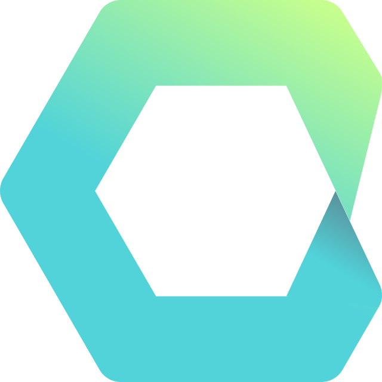

Cycle.js is clearly React inspired, but it attempts to fix some areas where React is deficient, or weird. It also advocates (forces?) a functional style, composing immutable state via observables.
Even with a React background the learning curve is steep. I started to see how it is possible to reason about Cycle.js applications when I saw the refactoring to the Intent-Model-View pattern. See jsbin.
This post includes graphics and code samples from the Cycle.js website.
Intent
Intent is typically a function from sources of input (drivers) (DOM, HTTP, etc) to a set of observables, named according to the user’s intent (e.g. changeHeight$, receiveUserDetails$).
function intent(DOM) {
return {
changeWeight$: DOM.get('#weight', 'input')
.map(ev => ev.target.value),
changeHeight$: DOM.get('#height', 'input')
.map(ev => ev.target.value)
};
}
Model
Model is a function from intents (produced by the Intent function) to a state$ observable. The latest value of the state$ observable is the current state of the component. state$ is observed by the view, so changes to state$ cause changes to the view. Earlier examples had the state spread across multiple observables (e.g. one for the DOM, one for each possible HTTP request). Consolidating state into a single observable takes some work but makes the component easier to reason about and the view easier to implement.
function model(actions) {
return Cycle.Rx.Observable.combineLatest(
actions.changeWeight$.startWith(70),
actions.changeHeight$.startWith(170),
(weight, height) =>
({weight, height, bmi: calculateBMI(weight, height)})
);
}
View
View is a function from the model observable (state$) to a vdom observable. This is equivalent to React’s Render function.
function view(state$) {
return state$.map(({weight, height, bmi}) =>
h('div', [
renderWeightSlider(weight),
renderHeightSlider(height),
h('h2', 'BMI is ' + bmi)
])
);
}
main()
A cycle.js application includes a function that represents the computer side of the human-computer interaction, often called main. It is a function from input drivers (http responses, DOM events) to output drivers (http requests, vdom structure). The Get Random User example shows working with two drivers (HTTP and DOM).
function main({DOM}) {
return {DOM: view(model(intent(DOM)))};
}
Cycle.run()
An application is started by calling Cycle.run() specifying the main function and the required drivers. E.g.
Cycle.run(main, {
DOM: makeDOMDriver('#app'),
HTTP: makeHTTPDriver()
});